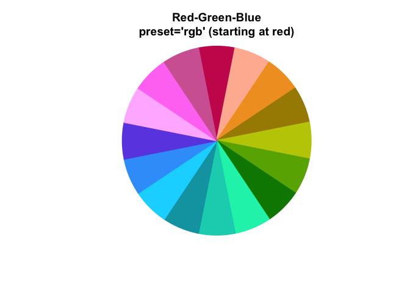
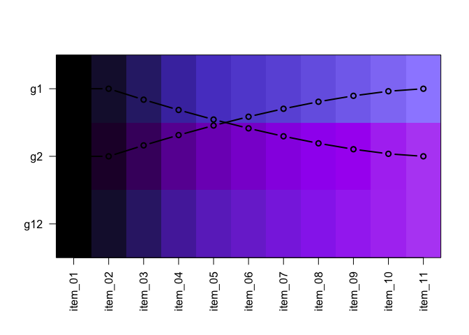
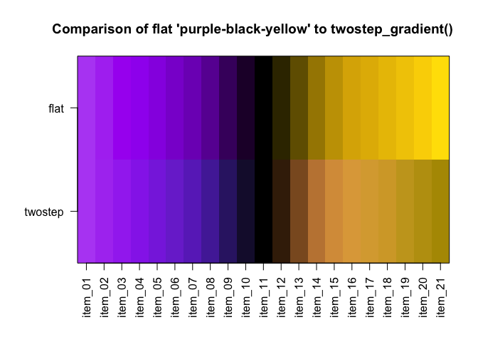
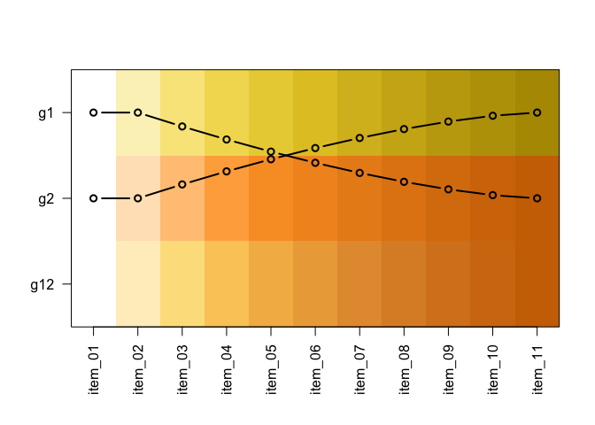

The goal of colorjam is to provide useful color manipulation functions for R data visualization.
It includes methods to generate dynamic categorical colors of arbitrary length, providing as much visual separation between adjacent colors as currently feasible.
Installation
To install colorjam, use the devtools package installer:
devtools::install_github(“jmw86069/colorjam”);
Note that colorjam Depends upon the “jamba” package for some manipulations.
Command reference
A full command reference is provided using the pkgdown::build_site() function, and is available here:
Quick start with colorjam
For the examples below, two packages are loaded:
Categorical colors
First generate some basic categorical colors, n=5 colors. We will use the function jamba::showColors() to display the colors.
showColors(rainbowJam(5));

To illustrate the effect of increasing categorical colors, we will create a list of categorical colors with increasing n.
colorList <- lapply(nameVector(c(5, 10, 20)), function(n){ rainbowJam(n); }); showColors(colorList, main="Dichromat color wheel (default colorjam)");

By default, colorjam uses a “warped” color wheel, which produces a dichromat (color blind friendly) color wheel.
There are several custom color wheel “presets”, for example red-yellow-blue color wheel can be used with preset="ryb".
colorList1 <- lapply(nameVector(c(5, 8, 16)), function(n){ rainbowJam(n, preset="ryb", hue_pad_percent=100, do_hue_pad=TRUE); }); showColors(colorList1, main="Red-Yellow-Blue color wheel (previous default rainbowJam)");

To view Red-Green-Blue colors using the default color wheel in base R, supply warpHue=FALSE as shown below, or use preset="rgb" to define the red-green-blue color wheel.
colorList2 <- lapply(nameVector(c(5, 10, 20)), function(n){ rainbowJam(n, warpHue=FALSE); }); showColors(colorList2, main="Red-Green-Blue color wheel (base R)");

Color-blending (new in version 0.0.16.900)
The color wheel red-yellow-blue is particularly effective for color-mixing operations. The function blend_colors() has some useful features:
- Paint color mixing style (blue + yellow = green)
- Able to mix more than two colors
- Accounts for color transparency during mixing
The argument do_plot=TRUE will plot a visual summary of the mixing results.
blent1 <- blend_colors(c("red", "blue"), do_plot=TRUE);

blent2 <- blend_colors(c("gold", "blue"), do_plot=TRUE);

blent3 <- blend_colors(c("gold", "red"), do_plot=TRUE);

blent4 <- blend_colors(c("gold", "deeppink4"), do_plot=TRUE);

blent5 <- blend_colors(c("red", "green4"), do_plot=TRUE);

blent6 <- blend_colors(c("blue", "darkorange"), do_plot=TRUE);

blent7 <- blend_colors(c("red", "gold", "blue"), do_plot=TRUE);

blent8 <- blend_colors(c("red1", "red3", "blue"), do_plot=TRUE);
blent9 <- blend_colors(c("red1", "blue1", "blue4"), do_plot=TRUE);

blent10 <- blend_colors(c("blue", "ivory"), do_plot=TRUE);

blent10 <- blend_colors(c("red", "blue", "ivory"), do_plot=TRUE);

Color-splitting
Another technique to expand a color palette is to split colors into a gradient, using the function color2gradient().
This technique is useful when assigning categorical colors to a primary group, then splitting those colors by a sub-grouping.
colorSet <- rainbowJam(5); colorSet4 <- color2gradient(colorSet, n=4); showColors(list(colorSet=rep(colorSet, each=4), colorSet4=unname(colorSet4)), main="Color split into 4 additional subsets.");

The color gradient can be tuned to increase or reduce the contrast between the light and dark colors:
colorSet <- rainbowJam(5); colorSet4a <- color2gradient(colorSet, n=4, gradientWtFactor=1/4); colorSet4c <- color2gradient(colorSet, n=4, gradientWtFactor=1); colorSet4b <- color2gradient(colorSet, n=4, gradientWtFactor=2); showColors(list(colorSet=rep(colorSet, each=4), `gradientWtFactor=1/4`=unname(colorSet4a), `gradientWtFactor=2/3\n(default)`=unname(colorSet4), `gradientWtFactor=1`=unname(colorSet4c), `gradientWtFactor=2`=unname(colorSet4b)), main="Colors adjusted with gradientWtFactor");

Assigning colors to groups
The function group2colors() takes a vector of group labels, and assigns categorical colors using rainbowJam(). To illustrate the process, each group will have a different number of replicates.
I use the helper function “makeNames()” which creates unique names for each vector item. Typically the names represent sample identifiers of some kind. The names are retained in the output color vector, which can be helpful to ensure data is in the correct order during a sequence of analysis steps.
groupLabels <- rep(c("Wildtype", "Knockout", "Treated"), c(3, 5, 4)); names(groupLabels) <- makeNames(groupLabels); groupColors <- group2colors(groupLabels); print(data.frame(groupLabels, groupColors)); #> groupLabels groupColors #> Wildtype_v1 Wildtype #0091FF #> Wildtype_v2 Wildtype #0091FF #> Wildtype_v3 Wildtype #0091FF #> Knockout_v1 Knockout #D92029 #> Knockout_v2 Knockout #D92029 #> Knockout_v3 Knockout #D92029 #> Knockout_v4 Knockout #D92029 #> Knockout_v5 Knockout #D92029 #> Treated_v1 Treated #FFB600 #> Treated_v2 Treated #FFB600 #> Treated_v3 Treated #FFB600 #> Treated_v4 Treated #FFB600 showColors(groupColors);

Colors are assigned in order, after sorting with jamba::mixedSort(), which provides alphanumeric sorting. However, if the input vector is a factor, the order of factor levels is maintained.
Sometimes it is helpful to split the colors by replicate using a color gradient, using jamba::color2gradient(). This technique is helpful when trying to make replicates visually distinct in a data visualization.
groupColorsSplit <- group2colors(groupLabels, useGradient=TRUE); showColors(groupColorsSplit);

ggplot2 color functions
There are a couple color functions useful with ggplot2.
- scale_color_jam() defines categorical colors to the ggplot2
colourproperty. - scale_fill_jam() defines categorical colors to the ggplot2
fillproperty.
These functions can be used directly in ggplot2 calls:
if (suppressPackageStartupMessages(require(ggplot2))) { dsamp <- diamonds[sample(nrow(diamonds), 1000),]; d <- ggplot(dsamp, aes(carat, price)) + geom_point(aes(colour=cut, fill=cut), size=4, shape=21); d + scale_color_jam() + scale_fill_jam() + ggtitle("scale_color_jam()"); }

Some plots use "fill" and "colour" properties, where the "colour" defines an outline. In this case, the colors can be adjusted to be lighter or darker using the darkFactor argument. The effect is to make the outline color slightly darker, and the fill color slightly brighter.
if (suppressPackageStartupMessages(require(ggplot2))) { d + scale_color_jam(darkFactor=1.5) + scale_fill_jam(darkFactor=-1.2) + ggtitle("Adjustment using 'darkFactor'"); }

Alternate ggplot2 theme
An alternative ggplot2 theme is provided, which by default does not use the newspaper-grey background color.
if (suppressPackageStartupMessages(require(ggplot2))) { d + scale_color_jam(darkFactor=1.5) + scale_fill_jam(darkFactor=-1.2) + ggtitle("theme_jam()") + theme_jam() }

Notably, this function provides some common arguments which can be customized.
-
base_size= The default font size in points. -
blankGrid= boolean which removes all background grid lines, alternatively useblankXgridorblankYgridfor control of either the x-axis or y-axis, respectively.
For example, when creating figures for presentation slides or other documents, it can be helpful to make the font substantially larger than would be comfortable on a computer screen.
if (suppressPackageStartupMessages(require(ggplot2))) { d + scale_color_jam(darkFactor=1.5) + scale_fill_jam(darkFactor=-1.2) + ggtitle("theme_jam()") + theme_jam(base_size=24) }

Naming colors
A small but useful function closestRcolor() takes a vector of colors, and returns a vector of the closest R color name based upon the colors defined by colors().
The name is sometimes easier to remember and re-use than the hex format.
The function has an optional argument showPalette=TRUE which will plot the original colors as well as the closest R color for comparison.
closestRcolor(rainbowJam(12), showPalette=TRUE);

#> #D92029 #FF9C74 #FF6300 #A34F00
#> "firebrick3" "lightsalmon" "tomato" "sienna"
#> #00D9FF #0084E9 #0061FF #B8C1FF
#> "turquoise2" "dodgerblue2" "royalblue2" "lightskyblue"
#> #956FFF #7D24FA #FF65FF #D43FCD
#> "lightslateblue" "purple2" "orchid1" "magenta3"Of course, not all hex colors have a close match in the named R colors, but the closest color is returned nonetheless.
Fixed color gradients (new in version 0.0.19.900, as of 08-Apr-2021)
Two new fixed gradients were added, motivated by the need for linear/sequential and divergent color gradients that are also color blindness friendly.
The linear/sequential gradients in jam_linear use a white baseline color, to distinguish them from divergent gradients. However the same names are used in jam_linear and jam_divergent.
jamba::showColors(jam_linear)

The divergent color gradients in jam_divergent use a black background, to be distinguished from the linear gradients. However they use the same names, so that they can be paired as appropriate.
jamba::showColors(jam_divergent)

The motivating example is showing genome sequence coverage heatmaps from something like a ChIP-seq experiment. The coverage data itself would use a linear gradient. If experimental data were compared to control data, using subtraction for example, the resulting coverage would use a divergent gradient with the same primary name as the coverage. An example would be "jam_linear$firebrick" for coverage, and "jam_divergent$firebrick_skyblue" for coverage difference.
See either the "platjam" R package (jmw86069/platjam) or the main package it extends from Bioconductor,“EnrichedHeatmap”, from the author of the amazing package“ComplexHeatmap”`.
Color gradient manipulations
Two new functions provide some interesting and useful features.
twostep_gradient() makes an “enhanced” linear/sequential gradient by combining the visual effects of two color gradients together. This technique is widely used, and famously demonstrated by Dr. Brewer in the R package RColorBrewer in her use of linear color gradients that also employ a subtle hue color shift to improve visible clarity between color steps.
Essentially the function takes two colors, produces a linear gradient for each individually, then blends them using a gradually increasing weight along the steps. The argument debug=TRUE will create a plot showing each individual color, then the final blended result. The example below uses "orange2" and "firebrick" and produces a much more visibly distinctive linear gradient.
ts1 <- twostep_gradient("orange2", "firebrick", n=11, debug=TRUE) #> w1 w2 #> 1 1.000 0.000 #> 2 1.000 0.000 #> 3 0.838 0.162 #> 4 0.686 0.314 #> 5 0.544 0.456 #> 6 0.414 0.586 #> 7 0.296 0.704 #> 8 0.192 0.808 #> 9 0.105 0.895 #> 10 0.037 0.963 #> 11 0.000 1.000 title("orange2 + firebrick");

ts2 <- twostep_gradient("aquamarine", "dodgerblue", n=11, debug=TRUE) #> w1 w2 #> 1 1.000 0.000 #> 2 1.000 0.000 #> 3 0.838 0.162 #> 4 0.686 0.314 #> 5 0.544 0.456 #> 6 0.414 0.586 #> 7 0.296 0.704 #> 8 0.192 0.808 #> 9 0.105 0.895 #> 10 0.037 0.963 #> 11 0.000 1.000 title("aquamarine + dodgerblue");

make_jam_divergent() is the next color gradient function in the chain, intended to combine two linear gradients into one divergent gradient. It is useful in that it accepts a single color, the name of a known color gradient, or a vector of colors for each “half” of the divergent color gradient. Oh and it can use a lite or dark baseline color.
The first use case is to combine the colors from twostep_gradient():
ts1ts2 <- make_jam_divergent(list(ts2=ts2), list(ts1=ts1), n=21) jamba::showColors(ts1ts2)

Another example re-creates a widely used yellow-black-purple color gradient, by first expanding each linear gradient, then combines them.
For kicks, we use single colors to create a comparable “flat” one-step divergent gradient, which is still quite nice.
gr1d <- twostep_gradient("slateblue1", "purple", debug=TRUE, lite=FALSE) #> w1 w2 #> 1 1.000 0.000 #> 2 1.000 0.000 #> 3 0.838 0.162 #> 4 0.686 0.314 #> 5 0.544 0.456 #> 6 0.414 0.586 #> 7 0.296 0.704 #> 8 0.192 0.808 #> 9 0.105 0.895 #> 10 0.037 0.963 #> 11 0.000 1.000

gr2d <- twostep_gradient("darkorange", "gold", debug=TRUE, lite=FALSE) #> w1 w2 #> 1 1.000 0.000 #> 2 1.000 0.000 #> 3 0.838 0.162 #> 4 0.686 0.314 #> 5 0.544 0.456 #> 6 0.414 0.586 #> 7 0.296 0.704 #> 8 0.192 0.808 #> 9 0.105 0.895 #> 10 0.037 0.963 #> 11 0.000 1.000
div12d <- make_jam_divergent(list(gr1d=gr1d), list(gr2d=gr2d)) div12dflat <- make_jam_divergent("purple", "gold", lite=FALSE) jamba::showColors(list( flat=div12dflat[[1]], twostep=div12d[[1]])) title("Comparison of flat 'purple-black-yellow' to twostep_gradient()")

It becomes more clear when using a light background. Note that jam_make_divergent() does a fairly good job already with just one color on each “side”.
gr1 <- twostep_gradient("slateblue", "purple", debug=TRUE) #> w1 w2 #> 1 1.000 0.000 #> 2 1.000 0.000 #> 3 0.838 0.162 #> 4 0.686 0.314 #> 5 0.544 0.456 #> 6 0.414 0.586 #> 7 0.296 0.704 #> 8 0.192 0.808 #> 9 0.105 0.895 #> 10 0.037 0.963 #> 11 0.000 1.000
gr2 <- twostep_gradient("gold", "darkorange", debug=TRUE) #> w1 w2 #> 1 1.000 0.000 #> 2 1.000 0.000 #> 3 0.838 0.162 #> 4 0.686 0.314 #> 5 0.544 0.456 #> 6 0.414 0.586 #> 7 0.296 0.704 #> 8 0.192 0.808 #> 9 0.105 0.895 #> 10 0.037 0.963 #> 11 0.000 1.000

div12 <- make_jam_divergent(list(gr1=gr1), list(gr2=gr2)) div12flat <- make_jam_divergent("purple", "gold") jamba::showColors(list( flat=div12flat[[1]], twostep=div12[[1]])) title("Comparison of flat 'purple-black-yellow' to twostep_gradient(),\nwith light baseline color")